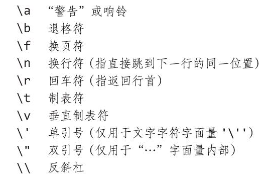

字符串类型
字符串类型，是现代编程语言中最常用的数据类型之一，多数主流编程语言都提供了对这个类型的原生支持，少数没有提供原生字符串的类型的主流语言（比如C语言）也通过其他形式提供了对字符串的支持。
字符串是不可变的字节序列，它可以包含任意数据，包括0值字节，但主要是人类可读的文本。习惯上，文本字符串被解读成按UTF-8编码的Unicode码点（文字符号）序列
原生支持字符串有什么好处？
我们前面提过，Go是站在巨人的肩膀上成长起来的现代编程语言。它继承了前辈语言的优点，又改进了前辈语言中的不足。这其中一处就体现在Go对字符串类型的原生支持上。
这样的设计会有什么好处呢？作为对比，我们先来看看前辈语言之一的C语言对字符串的支持情况。
C语言没有提供对字符串类型的原生支持，也就是说，C语言中并没有“字符串”这个数据类型。在C语言中，字符串是以字符串字面值或以’\0’结尾的字符类型数组来呈现的，比如下面代码：
#define GO_SLOGAN "less is more"
const char * s1 = "hello, gopher"
char s2[] = "I love go"
这样定义的非原生字符串在使用过程中会有很多问题，比如：
- 不是原生类型，编译器不会对它进行类型校验，导致类型安全性差；
- 字符串操作时要时刻考虑结尾的’\0’，防止缓冲区溢出；
- 以字符数组形式定义的“字符串”，它的值是可变的，在并发场景中需要考虑同步问题；
- 获取一个字符串的长度代价较大，通常是O(n)时间复杂度；
- C语言没有内置对非ASCII字符（如中文字符）的支持。
这些问题都大大加重了开发人员在使用字符串时的心智负担。于是，Go设计者们选择了原生支持字符串类型。
在Go中，字符串类型为 string。Go语言通过string类型统一了对“字符串”的抽象。这样无论是字符串常量、字符串变量或是代码中出现的字符串字面值，它们的类型都被统一设置为string，比如上面C代码换成等价的Go代码是这样的：
const (
GO_SLOGAN = "less is more" // GO_SLOGAN是string类型常量
s1 = "hello, gopher" // s1是string类型常量
)
var s2 = "I love go" // s2是string类型变量
那既然我们都说了，Go原生支持string的做法是对前辈语言的改进，这样的设计到底有哪些优秀的性质，会带来什么好处呢？
第一点：string类型的数据是不可变的，提高了字符串的并发安全性和存储利用率。
Go语言规定，字符串类型的值在它的生命周期内是不可改变的。这就是说，如果我们声明了一个字符串类型的变量，那我们是无法通过这个变量改变它对应的字符串值的，但这并不是说我们不能为一个字符串类型变量进行二次赋值。
什么意思呢？我们看看下面的代码就好理解了：
var s string = "hello"
s[0] = 'k' // 错误：字符串的内容是不可改变的
s = "gopher" // ok
在这段代码中，我们声明了一个字符串类型变量s。当我们试图通过下标方式把这个字符串的第一个字符由h改为k的时候，我们会收到编译器错误的提示： 字符串是不可变的。但我们仍可以像最后一行代码那样，为变量s重新赋值为另外一个字符串。
Go这样的“字符串类型数据不可变”的性质给开发人员带来的最大好处，就是我们不用再担心字符串的并发安全问题。这样，Go字符串可以被多个Goroutine（Go语言的轻量级用户线程，后面我们会详细讲解）共享，开发者不用因为担心并发安全问题，使用会带来一定开销的同步机制。
另外，也由于字符串的不可变性，针对同一个字符串值，无论它在程序的几个位置被使用，Go编译器只需要为它分配一块存储就好了，大大提高了存储利用率。
第二点：没有结尾’\0’，而且获取长度的时间复杂度是常数时间，消除了获取字符串长度的开销。
在C语言中，获取一个字符串的长度可以调用标准库的strlen函数，这个函数的实现原理是遍历字符串中的每个字符并做计数，直到遇到字符串的结尾’\0’停止。显然这是一个线性时间复杂度的算法，执行时间与字符串中字符个数成正比。并且，它存在一个约束，那就是传入的字符串必须有结尾’\0’，结尾’\0’是字符串的结束标志。如果你使用过C语言，想必你也吃过字符串结尾’\0’的亏。
Go语言修正了这个缺陷，Go字符串中没有结尾’\0’，获取字符串长度更不需要结尾’\0’作为结束标志。并且，Go获取字符串长度是一个常数级时间复杂度，无论字符串中字符个数有多少，我们都可以快速得到字符串的长度值。至于这方面的原理，我们等会再详细说明。
第三点：原生支持“所见即所得”的原始字符串，大大降低构造多行字符串时的心智负担。
如果我们要在C语言中构造多行字符串，一般就是两个方法：要么使用多个字符串的自然拼接，要么需要结合续行符""。但因为有转义字符的存在，我们很难控制好格式。 Go语言就简单多了， 通过一对反引号原生支持构造“所见即所得”的原始字符串（Raw String）。而且，Go语言原始字符串中的任意转义字符都不会起到转义的作用。比如下面这段代码：
package main
import "fmt"
func main() {
var s string =
,_---~~~~~----._ _,,_,*^____ _____*g*\\"*,--, / __/ /' ^. / \\ ^@q f [ @f | @)) | | @)) l 0 _/ \\/ \\~____ / __ \\_____/ \\ | _l__l_ I } [______] I ] | | | | ] ~ ~ | | | | |
fmt.Println(s)
}
字符串变量s被赋值了一个由一对反引号包裹的Gopher图案。这个Gopher图案由诸多ASCII字符组成，其中就包括了转义字符。这个时候，如果我们通过Println函数输出这个字符串，得到的图案和上面的图案并无二致。
第四点：对非ASCII字符提供原生支持，消除了源码在不同环境下显示乱码的可能。
Go语言源文件默认采用的是Unicode字符集，Unicode字符集是目前市面上最流行的字符集，它囊括了几乎所有主流非ASCII字符（包括中文字符）。Go字符串中的每个字符都是一个Unicode字符，并且这些Unicode字符是以UTF-8编码格式存储在内存当中的。
Go字符串的组成
Go语言在看待Go字符串组成这个问题上，有两种视角。一种是 字节视角，也就是和所有其它支持字符串的主流语言一样， Go语言中的字符串值也是一个可空的字节序列，字节序列中的字节个数称为该字符串的长度。一个个的字节只是孤立数据，不表意。
比如在下面代码中，我们输出了字符串中的每个字节，以及整个字符串的长度：
package main
import "fmt"
func main() {
var s = "中国人"
fmt.Printf("the length of s = %d\\n", len(s)) // 9
for i := 0; i < len(s); i++ {
fmt.Printf("0x%x ", s[i]) // 0xe4 0xb8 0xad 0xe5 0x9b 0xbd 0xe4 0xba 0xba
}
fmt.Printf("\\n")
}
我们看到，由“中国人”构成的字符串的字节序列长度为9。并且，仅从某一个输出的字节来看，它是不能与字符串中的任一个字符对应起来的。
如果要表意，我们就需要从字符串的另外一个视角来看，也就是 字符串是由一个可空的字符序列构成。这个时候我们再看下面代码：
package main
import (
"fmt"
"unicode/utf8"
)
func main() {
var s = "中国人"
fmt.Println("the character count in s is", utf8.RuneCountInString(s)) // 3
for _, c := range s {
fmt.Printf("0x%x ", c) // 0x4e2d 0x56fd 0x4eba
}
fmt.Printf("\\n")
}
the character count in s is 3
0x4e2d 0x56fd 0x4eba
在这段代码中，我们输出了字符串中的字符数量，也输出了这个字符串中的每个字符。前面说过，Go采用的是Unicode字符集，每个字符都是一个Unicode字符，那么这里输出的0x4e2d、0x56fd和0x4eba就应该是某种Unicode字符的表示了。没错，以0x4e2d为例，它是汉字“中”在Unicode字符集表中的码点（Code Point）。
那么，什么是Unicode码点呢？
Unicode字符集中的每个字符，都被分配了统一且唯一的字符编号。所谓 Unicode码点，就是指将Unicode字符集中的所有字符“排成一队”，字符在这个“队伍”中的 位次，就是它在Unicode字符集中的码点。也就说，一个码点唯一对应一个字符。“码点”的概念和我们马上要讲的rune类型有很大关系。
补充:Unicode
从前，事情简单明晰，至少，狭隘地看，软件只须处理一个字符集：ASCII（美国信息交换标准码）。ASCII（或更确切地说，US-ASCII）码使用7位表示128个“字符”：大小写英文字母、数字、各种标点和设备控制符。这对早期的计算机行业已经足够了，但是让世界上众多使用其他语言的人无法在计算机上使用自己的文书体系。随着互联网的兴起，包含纷繁语言的数据屡见不鲜。到底怎样才能应付语言的繁杂多样，还能兼顾高效率？
答案是Unicode(unicode.org)，它囊括了世界上所有文书体系的全部字符，还有重音符和其他变音符，控制码（如制表符和回车符），以及许多特有文字，对它们各自赋予一个叫Unicode码点的标准数字。在Go的术语中，这些字符记号称为文字符号(rune)。
Unicode第8版定义了超过一百种语言文字的12万个字符的码点。它们在计算机程序和数据中如何表示？天然适合保存单个文字符号的数据类型就是int32，为Go所采用；正因如此，rune类型作为int32类型的别名。
我们可以将文字符号的序列表示成int32值序列，这种表示方式称作UTF-32或UCS-4，每个Unicode码点的编码长度相同，都是32位。这种编码简单划一，可是因为大多数面向计算机的可读文本是ASCII码，每个字符只需8位，也就是1字节，导致了不必要的存储空间消耗。而使用广泛的字符的数目也少于65556个，字符用16位就能容纳。我们能作改进吗？
rune类型与字符字面值
Go使用rune这个类型来表示一个Unicode码点。rune本质上是int32类型的别名类型，它与int32类型是完全等价的，在Go源码中我们可以看到它的定义是这样的：
// $GOROOT/src/builtin.go
type rune = int32
由于一个Unicode码点唯一对应一个Unicode字符。所以我们可以说， 一个rune实例就是一个Unicode字符，一个Go字符串也可以被视为rune实例的集合。我们可以通过字符字面值来初始化一个rune变量。
在Go中，字符字面值有多种表示法，最常见的是 通过单引号括起的字符字面值，比如：
'a' // ASCII字符
'中' // Unicode字符集中的中文字符
'\\n' // 换行字符
'\\'' // 单引号字符
我们还可以使用 Unicode专用的转义字符\u或\U作为前缀， 来表示一个Unicode字符，比如：
'\\u4e2d' // 字符：中
'\\U00004e2d' // 字符：中
'\\u0027' // 单引号字符
这里，我们要注意，\u后面接四个十六进制数。如果是用四个十六进制数无法表示的Unicode字符，我们可以使用\U，\U后面可以接八个十六进制数来表示一个Unicode字符。
而且，由于表示码点的rune本质上就是一个整型数，所以我们还可 用整型值来直接作为字符字面值给rune变量赋值，比如下面代码：
'\\x27' // 使用十六进制表示的单引号字符
'\\047' // 使用八进制表示的单引号字符
字符串字面值
字符串是字符的集合，了解了字符字面值后，字符串的字面值也就很简单了。只不过字符串是多个字符，所以我们需要 把表示单个字符的单引号，换为表示多个字符组成的字符串的双引号 就可以了。我们可以看下面这些例子：
"abc\\n"
"中国人"
"\\u4e2d\\u56fd\\u4eba" // 中国人
"\\U00004e2d\\U000056fd\\U00004eba" // 中国人
"中\\u56fd\\u4eba" // 中国人，不同字符字面值形式混合在一起
"\\xe4\\xb8\\xad\\xe5\\x9b\\xbd\\xe4\\xba\\xba" // 十六进制表示的字符串字面值：中国人
我们看到，将单个Unicode字符字面值一个接一个地连在一起，并用双引号包裹起来就构成了字符串字面值。甚至，我们也可以像倒数第二行那样，将不同字符字面值形式混合在一起，构成一个字符串字面值。
不过，这里你可能发现了一个问题，上面示例代码的最后一行使用的是十六进制形式的字符串字面值，但每个字节的值与前面几行的码点值完全对应不上啊，这是为什么呢？
这个字节序列实际上是“中国人”这个Unicode字符串的UTF-8编码值。什么是UTF-8编码？它又与Unicode字符集有什么关系呢？
UTF-8编码方案
UTF-8编码解决的是Unicode码点值在计算机中如何存储和表示（位模式）的问题。那你可能会说，码点唯一确定一个Unicode字符，直接用码点值不行么？
这的确是可以的，并且UTF-32编码标准就是采用的这个方案。UTF-32编码方案固定使用4个字节表示每个Unicode字符码点，这带来的好处就是编解码简单，但缺点也很明显，主要有下面几点：
- 这种编码方案使用4个字节存储和传输一个整型数的时候，需要考虑不同平台的字节序问题;
- 由于采用4字节的固定长度编码，与采用1字节编码的ASCII字符集无法兼容；
- 所有Unicode字符码点都用4字节编码，显然空间利用率很差。
针对这些问题，Go语言之父Rob Pike发明了UTF-8编码方案。和UTF-32方案不同，UTF-8方案使用变长度字节，对Unicode字符的码点进行编码。编码采用的字节数量与Unicode字符在码点表中的序号有关：表示序号（码点）小的字符使用的字节数量少，表示序号（码点）大的字符使用的字节数多。
UTF-8编码使用的字节数量从1个到4个不等。前128个与ASCII字符重合的码点（U+0000~U+007F）使用1个字节表示；带变音符号的拉丁文、希腊文、西里尔字母、阿拉伯文等使用2个字节来表示；而东亚文字（包括汉字）使用3个字节表示；其他极少使用的语言的字符则使用4个字节表示。
这样的编码方案是兼容ASCII字符内存表示的，这意味着采用UTF-8方案在内存中表示Unicode字符时，已有的ASCII字符可以被直接当成Unicode字符进行存储和传输，不用再做任何改变。
此外，UTF-8的编码单元为一个字节（也就是一次编解码一个字节），所以我们在处理UTF-8方案表示的Unicode字符的时候，就不需要像UTF-32方案那样考虑字节序问题了。相对于UTF-32方案，UTF-8方案的空间利用率也是最高的。
现在，UTF-8编码方案已经成为Unicode字符编码方案的事实标准，各个平台、浏览器等默认均使用UTF-8编码方案对Unicode字符进行编、解码。Go语言也不例外，采用了UTF-8编码方案存储Unicode字符，我们在前面按字节输出一个字符串值时看到的字节序列，就是对字符进行UTF-8编码后的值。
那么现在我们就使用Go在标准库中提供的UTF-8包，对Unicode字符（rune）进行编解码试试看：
// rune -> []byte
func encodeRune() {
var r rune = 0x4E2D
fmt.Printf("the unicode charactor is %c\\n", r) // 中
buf := make([]byte, 3)
_ = utf8.EncodeRune(buf, r) // 对rune进行utf-8编码
fmt.Printf("utf-8 representation is 0x%X\\n", buf) // 0xE4B8AD
}
// []byte -> rune
func decodeRune() {
var buf = []byte{0xE4, 0xB8, 0xAD}
r, _ := utf8.DecodeRune(buf) // 对buf进行utf-8解码
fmt.Printf("the unicode charactor after decoding [0xE4, 0xB8, 0xAD] is %s\\n", string(r)) // 中
}
这段代码中，encodeRune通过调用UTF-8的EncodeRune函数实现了对一个rune，也就是一个Unicode字符的编码，decodeRune则调用UTF-8包的decodeRune，将一段内存字节转换回一个Unicode字符。
好了，现在我们已经搞清楚Go语言中字符串类型的性质和组成了。有了这些基础之后，我们就可以看看Go是如何实现字符串类型的。也就是说，在Go的编译器和运行时中，一个字符串变量究竟是如何表示的？
Go字符串类型的内部表示
其实，我们前面提到的Go字符串类型的这些优秀的性质，Go字符串在编译器和运行时中的内部表示是分不开的。Go字符串类型的内部表示究竟是什么样的呢？在标准库的reflect包中，我们找到了答案，你可以看看下面代码：
// $GOROOT/src/reflect/value.go
// StringHeader是一个string的运行时表示
type StringHeader struct {
Data uintptr
Len int
}
我们可以看到， string类型其实是一个“描述符”，它本身并不真正存储字符串数据，而仅是由一个指向底层存储的指针和字符串的长度字段组成的。
Go编译器把源码中的string类型映射为运行时的一个二元组（Data, Len），真实的字符串值数据就存储在一个被Data指向的底层数组中。通过Data字段，我们可以得到这个数组的内容，你可以看看下面这段代码：
func dumpBytesArray(arr []byte) {
fmt.Printf("[")
for _, b := range arr {
fmt.Printf("%c ", b)
}
fmt.Printf("]\\n")
}
func main() {
var s = "hello"
hdr := (
reflect.StringHeader)(unsafe.Pointer(&s)) // 将string类型变量地址显式转型为reflect.StringHeader
fmt.Printf("0x%x\\n", hdr.Data) // 0x10a30e0
* p := (*
[5]byte)(unsafe.Pointer(hdr.Data)) // 获取Data字段所指向的数组的指针
dumpBytesArray((*p)[:]) // [h e l l o ] // 输出底层数组的内容
}
这段代码利用了unsafe.Pointer的通用指针转型能力，按照StringHeader给出的结构内存布局，“顺藤摸瓜”，一步步找到了底层数组的地址，并输出了底层数组内容。
知道了string类型的实现原理后，我们再回头看看Go字符串类型性质中“获取长度的时间复杂度是常数时间”那句，是不是就很好理解了？之所以是常数时间，那是因为字符串类型中包含了字符串长度信息，当我们用len函数获取字符串长度时，len函数只要简单地将这个信息提取出来就可以了。
了解了string类型的实现原理后，我们还可以得到这样一个结论，那就是 我们直接将string类型通过函数/方法参数传入也不会带来太多的开销。 因为传入的仅仅是一个“描述符”，而不是真正的字符串数据。
那么，了解了Go字符串的一些基本信息和原理后，我们从理论转向实际，看看日常开发中围绕字符串类型都有哪些常见操作。
Go字符串类型的常见操作
由于字符串的不可变性，针对字符串，我们更多是尝试对其进行读取，或者将它作为一个组成单元去构建其他字符串，又或是转换为其他类型。下面我们逐一来看一下这些字符串操作：
第一个操作：下标操作。
在字符串的实现中，真正存储数据的是底层的数组。字符串的下标操作本质上等价于底层数组的下标操作。我们在前面的代码中实际碰到过针对字符串的下标操作，形式是这样的：
var s = "中国人"
fmt.Printf("0x%x\\n", s[0]) // 0xe4：字符“中” utf-8编码的第一个字节
我们可以看到，通过下标操作，我们获取的是字符串中特定下标上的字节，而不是字符。
第二个操作：字符迭代。
Go有两种迭代形式：常规for迭代与for range迭代。 你要注意，通过这两种形式的迭代对字符串进行操作得到的结果是不同的。
通过常规for迭代对字符串进行的操作是一种字节视角的迭代，每轮迭代得到的的结果都是组成字符串内容的一个字节，以及该字节所在的下标值，这也等价于对字符串底层数组的迭代，比如下面代码：
var s = "中国人"
for i := 0; i < len(s); i++ {
fmt.Printf("index: %d, value: 0x%x\\n", i, s[i])
}
运行这段代码，我们会看到，经过常规for迭代后，我们获取到的是字符串里字符的UTF-8编码中的一个字节：
index: 0, value: 0xe4
index: 1, value: 0xb8
index: 2, value: 0xad
index: 3, value: 0xe5
index: 4, value: 0x9b
index: 5, value: 0xbd
index: 6, value: 0xe4
index: 7, value: 0xba
index: 8, value: 0xba
而像下面这样使用for range迭代，我们得到的又是什么呢？我们继续看代码：
var s = "中国人"
for i, v := range s {
fmt.Printf("index: %d, value: 0x%x\\n", i, v)
}
同样运行一下这段代码，我们得到：
index: 0, value: 0x4e2d
index: 3, value: 0x56fd
index: 6, value: 0x4eba
我们看到，通过for range迭代，我们每轮迭代得到的是字符串中Unicode字符的码点值，以及该字符在字符串中的偏移值。我们可以通过这样的迭代，获取字符串中的字符个数，而通过Go提供的内置函数len，我们只能获取字符串内容的长度（字节个数）。当然了，获取字符串中字符个数更专业的方法，是调用标准库UTF-8包中的RuneCountInString函数，这点你可以自己试一下。
第三个操作：字符串连接。
我们前面已经知道，字符串内容是不可变的，但这并不妨碍我们基于已有字符串创建新字符串。Go原生支持通过+/+=操作符进行字符串连接，这也是对开发者体验最好的字符串连接操作，你可以看看下面这段代码：
s := "Rob Pike, "
s = s + "Robert Griesemer, "
s += " Ken Thompson"
fmt.Println(s) // Rob Pike, Robert Griesemer, Ken Thompson
不过，虽然通过+/+=进行字符串连接的开发体验是最好的，但连接性能就未必是最快的了。除了这个方法外，Go还提供了strings.Builder、strings.Join、fmt.Sprintf等函数来进行字符串连接操作。关于这些方法的性能讨论，我放到了后面的思考题里，我想让你先去找一下答案。
第四个操作：字符串比较。
Go字符串类型支持各种比较关系操作符，包括= =、!= 、>=、<=、> 和 <。在字符串的比较上，Go采用字典序的比较策略，分别从每个字符串的起始处，开始逐个字节地对两个字符串类型变量进行比较。
当两个字符串之间出现了第一个不相同的元素，比较就结束了，这两个元素的比较结果就会做为串最终的比较结果。如果出现两个字符串长度不同的情况，长度比较小的字符串会用空元素补齐，空元素比其他非空元素都小。
这里我给了一个Go字符串比较的示例：
func main() {
// ==
s1 := "世界和平"
s2 := "世界" + "和平"
fmt.Println(s1 == s2) // true
// !=
s1 = "Go"
s2 = "C"
fmt.Println(s1 != s2) // true
// < and <=
s1 = "12345"
s2 = "23456"
fmt.Println(s1 < s2) // true
fmt.Println(s1 <= s2) // true
// > and >=
s1 = "12345"
s2 = "123"
fmt.Println(s1 > s2) // true
fmt.Println(s1 >= s2) // true
}
你可以看到，鉴于Go string类型是不可变的，所以说如果两个字符串的长度不相同，那么我们不需要比较具体字符串数据，也可以断定两个字符串是不同的。但是如果两个字符串长度相同，就要进一步判断，数据指针是否指向同一块底层存储数据。如果还相同，那么我们可以说两个字符串是等价的，如果不同，那就还需要进一步去比对实际的数据内容。
第五个操作：字符串转换。
在这方面，Go支持字符串与字节切片、字符串与rune切片的双向转换，并且这种转换无需调用任何函数，只需使用显式类型转换就可以了。我们看看下面代码：
var s string = "中国人"
// string -> []rune
rs := []rune(s)
fmt.Printf("%x\\n", rs) // [4e2d 56fd 4eba]
// string -> []byte
bs := []byte(s)
fmt.Printf("%x\\n", bs) // e4b8ade59bbde4baba
// []rune -> string
s1 := string(rs)
fmt.Println(s1) // 中国人
// []byte -> string
s2 := string(bs)
fmt.Println(s2) // 中国人
这样的转型看似简单，但无论是string转切片，还是切片转string，这类转型背后也是有着一定开销的。这些开销的根源就在于string是不可变的，运行时要为转换后的类型分配新内存。
转义
在带双引号的字符串字面量中，转义序列以反斜杠(\)开始，可以将任意值的字节插入字符串中。下面是一组转义符，表示ASCII控制码，如换行符、回车符和制表符。

源码中的字符串也可以包含十六进制或八进制的任意字节。十六进制的转义字符写成\xhh的形式，h是十六进制数字（大小写皆可），且必须是两位。八进制的转义字符写成\ooo的形式，必须使用三位八进制数字(0～7)，且不能超过\377。这两者都表示单个字节，内容是给定值。
字符串和字节slice
4个标准包对字符串操作特别重要：bytes、strings、strconv和unicode。
strings包提供了许多函数，用于搜索、替换、比较、修整、切分与连接字符串。
bytes包也有类似的函数，用于操作字节slice（[]byte类型，其某些属性和字符串相同）。由于字符串不可变，因此按增量方式构建字符串会导致多次内存分配和复制。这种情况下，使用bytes.Buffer类型会更高效。
strconv包具备的函数，主要用于转换布尔值、整数、浮点数为与之对应的字符串形式，或者把字符串转换为布尔值、整数、浮点数，另外还有为字符串添加/去除引号的函数。
unicode包备有判别文字符号值特性的函数，如IsDigit、IsLetter、IsUpper和IsLower。每个函数以单个文字符号值作为参数，并返回布尔值。若文字符号值是英文字母，转换函数（如ToUpper和ToLower）将其转换成指定的大小写。上面所有函数都遵循Unicode标准对字母数字等的分类原则。strings包也有类似的函数，函数名也是ToUpper和ToLower，它们对原字符串的每个字符做指定变换，生成并返回一个新字符串。